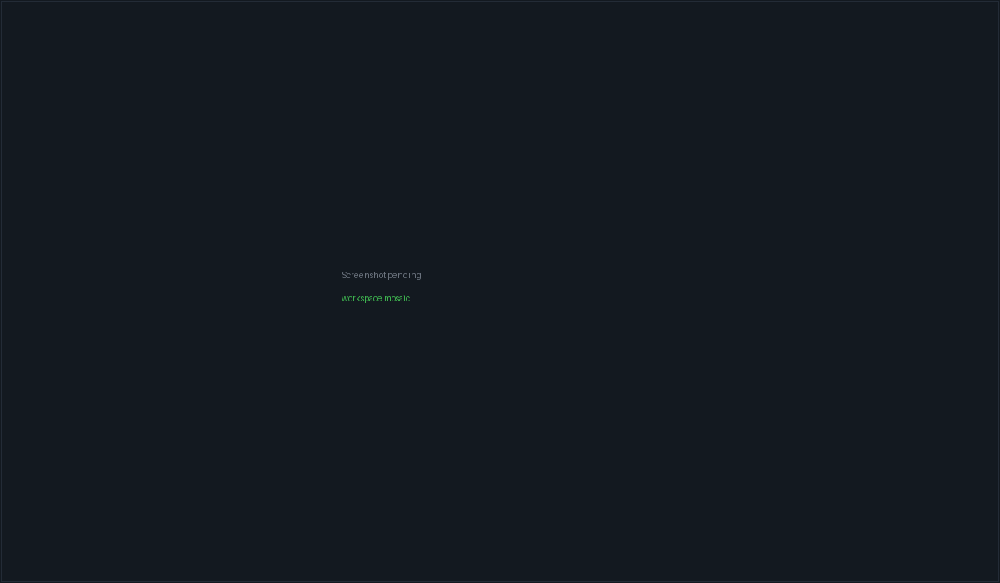

Workspaces & terminals#
A workspace is a named project context that owns a set of panes. Most of
those panes are real PTYs running a coding CLI — claude, codex, opencode,
packetcode — or a plain shell; the rest are chat conversation tiles and file
viewers. Workspaces persist across restarts, hydrate dormant, and only start
processes once you actually open them.
The surface is reached from the left rail (terminal icon), from the command palette, or with Ctrl+Shift+W.

A workspace with several PTY panes tiled by the mosaic, the workspace tab strip above them and the Git panel docked at the right.
What a workspace holds#
Every workspace record carries these fields (src/types/workspace.ts):
| Field | Meaning |
|---|---|
name |
Shown on the tab strip and in the Fleet sidebar |
projectPath |
The local checkout. Used as every local pane's cwd |
serverId / remoteProjectPath |
Set instead for an SSH workspace |
executionTarget |
{kind:"local"} or {kind:"ssh", serverId} — the canonical discriminant |
agents |
The CLI roster behind the header badges. Conversation and file panes are deliberately not in it |
panes |
The authoritative list of what exists in this workspace |
layout |
A cache of your hand-arranged mosaic tree, never the source of truth |
prompt |
Auto-sent as the first input to every non-terminal CLI pane |
bypassPermissions |
Adds a per-CLI bypass flag at launch (see below) |
modelOverrides / effortOverrides |
Per-agent-slot --model / --effort args |
terminalShell |
Workspace-level default shell for terminal panes |
githubRepo |
Derived from git remote get-url origin at creation time |
status |
active or archived. Archived workspaces are hidden from the tab strip |
origin |
"conversation" marks an auto-created wrapper for a standalone chat |
panes is the truth about what exists; layout is only an
arrangement. On load the mosaic reconciles the saved tree against the real
pane list — leaves whose pane is gone are pruned, panes the layout never saw
are appended — so a stale layout can neither lose a pane nor render one twice.
Creating a workspace#
The + button on the tab strip (tooltip: "New workspace (choose template)…") opens the New Workspace dialog. The Fleet sidebar's own "New workspace" CTA is the instant path; this one is the templated fork.
Templates#
Picking a template pre-selects a set of CLI sessions and seeds the name. Any session the template names that is not installed is silently dropped from the selection.
| Template | Sessions | Description shown |
|---|---|---|
| PacketCode | packetcode |
Recommended terminal coding loop |
| CLI Pair | packetcode, codex |
PacketCode + Codex side-by-side |
| Review Pair | claude-code, codex |
Claude Code + Codex CLI |
| Shell | terminal |
One plain terminal |
Form fields#
- Name — auto-seeded from the template or the chosen folder; typing in it marks the name as hand-edited and later template clicks stop overwriting it.
- Location — Local or Remote. Remote asks for an SSH server and a remote project path, and probes that the path exists.
- Project folder — a recents dropdown plus a native folder picker. For a remote workspace you can instead clone a repo URL (with an optional branch; blank means the repo's default branch).
- Agent sessions — checkboxes over the five slots. Not-installed slots show an Install link (or, for PacketCode, a Set up button that jumps to Settings → CLI clients).
- Model / effort overrides — per slot. Claude Code seeds
effort: medium. - Bypass permissions — see the warning below.
- Prompt — "Describe the task for all CLI sessions…". This becomes
workspace.promptand is written into every non-terminalpane's stdin once its session is ready.
The workspace header#
A single 33px row across the top of the surface:
| Control | Behaviour |
|---|---|
| Workspace tabs | One per non-archived workspace, with a status dot rolled up from the max severity across member tiles. Tooltip is the project path. Clicking switches the visible workspace; all of them stay mounted so live PTYs survive |
| + | Opens the New Workspace dialog |
| Agent badges | One per (agent slot × account) pair with a count suffix (Claude x2). Conversation and file panes never appear here |
| + Add Session | The pane picker, described below |
| Delegate | "Delegate work on this project to a GUI agent" — hands the workspace off to the Agents surface |
| Git icon | Toggles the Git panel in the right dock |
| Bypass perms: on/off | Per-workspace toggle, described below |
Bypass permissions#
The toggle sets workspace.bypassPermissions, which appends one flag at the
next session launch:
| Slot | Flag appended |
|---|---|
claude-code |
--dangerously-skip-permissions |
codex |
--dangerously-bypass-approvals-and-sandbox |
opencode |
(none) |
packetcode |
(none) |
terminal |
(none) |
OpenCode is deliberately omitted from that table — it has no
equivalent launch flag, and passing one makes it print --help and exit.
Configure OpenCode's permissions inside its own TUI/config instead. The
toggle will still read "on" for an OpenCode pane; it simply does nothing
there.
The toggle only affects panes started after you flip it. Restart a pane for the change to take effect.
Adding panes#
+ Add Session opens a 320px picker with a search box ("Search CLI sessions…"). It has three sections.
CLI sessions#
One row per terminal slot. PacketCode floats to the top with a Recommended pill when it is installed. A row that is not installed is disabled and grows an Install link (PacketCode gets a Set up button instead).
| Slot | Row label | Launches |
|---|---|---|
packetcode |
PacketCode | packetcode |
terminal |
Terminal | Your selected shell |
claude-code |
Claude Code | claude |
codex |
Codex CLI | codex |
opencode |
OpenCode | opencode |
Install-hint links point at the Claude Code docs, the openai/codex repo and
opencode.ai respectively. On an SSH workspace, "installed" means the server
record lists that agent in installedAgents, not your local machine.
Two extra controls appear on rows that need them:
- Account chip — only on
claude-codeandcodex, and only once you have registered a CLI account. Leaving it untouched keeps the one-click fast path (the sticky per-project default is resolved for you). Changing it makes that account the project's new sticky default. - Shell select — only on the Terminal row. Defaults to "Default shell",
meaning inherit. Unavailable profiles render as
… · unavailableand are disabled.
The WSL row#
On Windows, when at least one distribution is detected, a separate WSL ·
<distro> row appears. It is exactly a Terminal pane carrying a wsl shell
selection — no new pane kind, no second launch path.
Viewers#
- File Viewer — "Open any file as a tile". Opens a native file dialog rooted at the project path.
- Markdown Viewer — "Open a .md rendered". Same tile, filtered to
.md/.mdxand opened in preview mode.
Both are disabled (not hidden) on SSH workspaces, with the tooltip "File viewers read the local filesystem — not available on SSH workspaces".
Re-opening a file that already has a tile focuses the existing tile rather than stacking a duplicate viewer.
Shells#
Terminal panes resolve their shell from three levels, most specific first:
pane.terminalShell— set when you picked a shell (or the WSL row) at add timeworkspace.terminalShell— the workspace default- The app default, persisted in
localStorageunderpacketbench:terminal-default-shell
Available profiles#
| Profile id | Label | Default command | Default args |
|---|---|---|---|
auto |
Auto-detect | The slot's own command | (none) |
powershell7 |
PowerShell 7 | pwsh |
(none) |
windows-powershell |
Windows PowerShell | powershell |
(none) |
command-prompt |
Command Prompt | cmd |
(none) |
git-bash |
Git Bash | bash |
--login -i |
wsl |
WSL | wsl |
--distribution <distro> when a distro is set |
bash |
Bash | bash |
(none) |
zsh |
Zsh | zsh |
(none) |
custom |
Custom executable | your path | (none) |
Windows offers auto, powershell7, windows-powershell, command-prompt, git-bash, wsl, custom; everything else offers auto, bash, zsh, custom. The custom row
is hidden from the picker unless your app default is already a custom shell.
Custom shells are allowlisted#
A custom executable is only honoured when its program name (path and
.exe/.cmd/.bat stripped, lowercased) is one of:
bash cmd fish nu powershell pwsh sh wsl xonsh zshAn unsupported custom executable does not produce an error.
resolveTerminalShellLaunch silently falls back to the auto command and
labels the pane <command> (Auto). If your custom shell appears to be
ignored, this is why.
Arguments are parsed by PacketBench's own tokenizer, not by a shell: quotes group, a backslash escapes only whitespace / quotes / another backslash (so ordinary Windows path separators survive), and at most 32 arguments are kept.
The mosaic#
Panes are tiled with react-mosaic. The layout is built from a preset the first
time and then grown by appending, never re-nesting:
| Pane count | Preset | Columns |
|---|---|---|
| 0–1 | 1x1 |
1 |
| 2 | 1x2 |
2 |
| 3–4 | 2x2 |
2 |
| 5+ | 3x2 |
2 |
New panes are appended to the root split so no surviving tile changes depth — re-nesting a leaf would remount it and kill its PTY.
- Drag a tile by its header bar to reorder.
- Drag a splitter to resize. The new tree is only persisted on release, and a tree carrying a collapsed (0%) split is refused — that shape only appears mid-drag.
- Zoom with the tile's maximize button or by double-clicking its header. Zoom is CSS-only: every other tile stays mounted and hidden, so no PTY is interrupted. Press Esc to exit — unless focus is inside the terminal, which owns every keystroke; then use the tile's zoom button. The on-screen hint says exactly this.
Growing a workspace one pane at a time produces progressively narrower columns. That shape is deliberately not saved: only a real drag gesture writes a layout, so the next launch rebuilds from the preset. Once you arrange tiles by hand, that arrangement is what persists.
The pane header and overflow menu#
Each terminal tile's header is one row: drag grip, a pulsing status dot, the pane identity, an account chip (ambient panes show nothing), a status pill, a zoom button and a ⋮ overflow menu.
The status pill reads one of: not installed, approval, running, error,
idle. Terminal panes label themselves Terminal · <shell label> — or
Terminal · Remote login shell on an SSH workspace.
The overflow menu:
| Item | Effect |
|---|---|
Model: <label> |
Sub-panel listing the models for this slot plus Default. Footer says "Takes effect on next session" — it writes workspace.modelOverrides, it does not restart anything |
| Send prompt… | Only when a session is live. Lists your prompt templates and writes the chosen body plus a carriage return into this pane's PTY |
| Pinned commands (n/5) | Add, run and remove up to five saved commands. Pins also render as a quick-run strip under the header |
| Restart session / Start session | Kills the old PTY (if any) and starts a fresh one, clearing the terminal |
| Close pane | Opens a confirm dialog: "Any live PTY and CLI process in this pane will be stopped." A failed remote stop keeps the pane and shows the error rather than orphaning the process |
Model catalogues per slot#
| Slot | Models offered |
|---|---|
claude-code |
Opus 4.8, Opus 4.7, Opus 4.6, Sonnet 4.6, Haiku 4.5 |
codex |
GPT-5.5, GPT-5.4, GPT-5.3 Codex |
opencode |
MiniMax M3 (minimax/MiniMax-M3) |
packetcode |
MiniMax M3 (MiniMax-M3) |
terminal |
(no model picker) |
Effort levels are Low / Medium / High and become --effort <level>.
How a terminal session actually starts#
- The pane mounts and, if it is in the visible and selected workspace, arms a single automatic launch after a 200 ms delay. That launch happens once per pane — toggling visibility or changing memoised options never silently restarts a running CLI.
- Concurrent starts for the same pane are deduped in a module-level registry.
Without this, React StrictMode's double-mount spawned two PTYs; harmless for
claude/codex, fatal foropencode(the second instance exits 1 and leaves a permanently blank pane). - The frontend calls
create_pty_sessionwith the project path, current terminal dimensions, the command, args and env. - The backend validates the command against the allowlist, resolves it to a real executable, opens a PTY and spawns the child.
- Output streams back on
pty:output:<sessionId>; exit arrives onpty:exit:<sessionId>. On attach the frontend replays the server-side transcript first, then any events it buffered while replaying, so nothing is lost or doubled. - If
workspace.promptis set and the pane is not a plain terminal, the prompt is written to stdin — immediately forclaude, after a 3-second delay for everything else so the TUI has time to initialise.
The command allowlist#
create_pty_session refuses anything whose program name is not in:
claude codex opencode packetcode
bash sh zsh powershell pwsh cmd wsl fish nu xonsh
sshThe check is on the program name — directory components and a trailing
executable extension are stripped and the result is lowercased — so a pinned
absolute path like D:\tools\packetcode.exe validates as packetcode.
The error is explicit: Command '<x>' is not allowed. Allowed commands: [...].
Working directory rules#
| Situation | cwd used |
|---|---|
ssh command |
Your home directory (the remote path is not local) |
| Project path is a real directory | That directory |
Project path is empty or / |
~/.packetbench/scratch, created on demand |
| Project path is set but not a directory | Error: Project path '<x>' is not a valid directory |
The empty-path fallback is a dedicated scratch directory rather than
$HOME on purpose. An agent like claude scans its cwd for context, and
scanning $HOME walks into ~/Music, ~/Pictures, ~/Documents — which
triggers macOS TCC permission prompts attributed to PacketBench.
Environment applied to every PTY#
TERM=xterm-256color and COLORTERM=truecolor are always set, then your
pane-supplied env is merged on top.
For claude panes specifically:
| Variable / flag | Value | Why |
|---|---|---|
--settings <json> |
Generated | Injects PacketBench's status-line collector through Claude's supported settings seam. Your own settings stay loaded; only statusLine is overridden |
CLAUDECODE |
removed | Stops Claude thinking it is nested inside another session |
CLAUDE_CODE_ENTRYPOINT |
removed | Same |
DISABLE_AUTOUPDATER |
1 |
An auto-update mid-session can swap in a build incompatible with the PTY |
PACKETBENCH |
1 |
Tells statusline.ps1 to suppress its own output |
PACKETCODE |
1 |
Backwards compatibility with existing scripts |
The status-line helper path and state directory are applied after your pane env, so persisted workspace state cannot redirect them.
Binary resolution#
On POSIX, resolution is: an app pin at ~/.packetbench/<command>-bin containing
an absolute path, then an explicit path if the command contains /, then a PATH
scan producing an absolute path. The absolute-path requirement matters: the
PTY layer resolves a relative program against cwd first, so a stray claude
directory in your home folder would otherwise shadow the real CLI and the pane
would just say [Session ended].
On Windows, resolution uses where.exe, with two special cases:
- A command that is already an existing explicit path is used verbatim.
- For
codex, the npm.cmdwrapper is preferred, and a WindowsAppsopenai.codex_…executable is skipped entirely — that packaged GUI app is not a PTY CLI and cannot be spawned (Access is denied). bashfalls back to known Git-Bash install locations beforewhere.
A resolved .cmd is spawned as cmd.exe /c <path>, which is why the process
tree — not just the direct child — has to be killed on close.
The ~/.packetbench/<command>-bin pin file is a POSIX-only escape
hatch; the Windows resolver does not read it. On Windows, pin a binary by
setting its explicit path in Settings → CLI clients instead.
Approvals in a terminal pane#
PacketBench watches PTY output for the CLI's own approval prompts. When one is detected an amber overlay appears at the bottom of the pane:
Approval needed — Allow (y) · Deny (n) · Abort (Esc)
The buttons write y\n, n\n and \x03 (Ctrl-C) into the PTY respectively.
Bare y / n / Esc also work, under a strict ownership rule:
- Exactly one pane waiting → it owns the keypress, focused or not.
- Several waiting → only the active pane answers. Click a pane to make it active, or use its on-screen buttons.
- Several waiting and none active → nobody answers.
This ownership rule exists because the earlier version had
none: every waiting pane bound the same window keys, so a single y wrote
y\n into every waiting agent's stdin — silently approving actions in panes
you had not looked at.
The shortcut never fires while focus is in an <input> or <textarea> (which
includes xterm's own focus holder).
Terminal rendering#
The emulator is xterm.js with the fit, web-links, unicode11 and WebGL addons.
| Setting | Value |
|---|---|
| Font | JetBrains Mono, Cascadia Code, Fira Code, Consolas, monospace |
| Font size | 13px, line height 1.15 |
| Scrollback | 10,000 lines |
| Unicode | Version 11 |
| Renderer | WebGL, falling back to canvas |
Two rendering workarounds are worth knowing about, because they explain symptoms you may have seen in other tools:
- DECRQM is stubbed out. xterm 6.0.0's bundled
requestModehandler throws in minified builds, which aborts the whole parse. Any stream containing a DECRQM query then renders nothing — which is whyopencodepanes were blank whileclaude/codexwere fine. PacketBench registers a no-op handler; the CLI simply gets no mode-support reply and handles that gracefully. - WebGL is attached lazily. A WebGL canvas attached to a hidden or 0×0 container comes back permanently blank. PacketBench only attaches once the container is visible, and recreates + force-repaints it on the hidden→visible transition.
Resizes are debounced through a ResizeObserver that refuses degenerate
dimensions: a hidden workspace reports 0×0, and fitting the PTY to that scrambles
full-TUI CLIs on return.
Session lifecycle and failure modes#
| What you see | What happened |
|---|---|
[Session ended] in grey |
The child exited, or you killed/restarted the pane |
Failed to start <CLI>: <message> in red, followed by Make sure '<cmd>' is installed and on your PATH. |
The spawn itself failed |
Command '<x>' is not allowed. |
The command is not on the PTY allowlist |
Project path '<x>' is not a valid directory |
The workspace's project path no longer exists |
| A pane that never paints | Usually the WebGL-while-hidden case above; switching away and back forces a repaint |
Closing a pane, restarting it, or unmounting it all kill the PTY. Process ids are recorded at spawn so a crash or force-quit that never reaches the exit handler gets swept on the next launch.
PacketBench writes at most 64 KB per write_pty call. There is no
backend "orchestrator kill" path any more — every exit you see is either a
natural process exit or a kill you asked for.
Session tabs, status and memory capture#
Each live PTY registers a session tab with a status that drives the dots you see on the workspace tab strip:
| Status | Label |
|---|---|
idle |
Idle |
starting |
Starting… |
thinking |
Thinking… |
running |
Working… |
waiting_approval |
Needs approval |
waiting_input |
Needs input |
done |
Done (with elapsed time once finished) |
error |
Error |
An activity strip appears under the terminal while a tool is running,
showing the tool and the file it touched. Below that, claude, codex and
opencode panes get a native status bar; other CLIs get none.
Sessions longer than 10 seconds are recorded into Memory when
they end — stamped done for a natural exit and killed for a kill, restart or
pane close. Both are real sessions, so both are captured.
The right dock#
The Workspace surface registers two dock panels; only one is visible at a time and they share a single width budget.
| Panel | Notes |
|---|---|
| Editor | Disabled on SSH workspaces — it reads the local filesystem |
| Git | The Git Dashboard, scoped to the workspace's project path (or its remote path for an SSH workspace) |
Keyboard shortcuts#
| Keys | Action |
|---|---|
| Ctrl+Shift+W | Go to Workspace |
| Ctrl/Cmd+N | New workspace — auto-named (Workspace, Workspace 2, …), falling into the OS folder picker when no project path is known. Yields to typing, so it does nothing while focus is in a text field |
| Ctrl+K | Command palette — skipped while focus is in a terminal, because Ctrl+K is readline's kill-line |
| Esc | Exit pane zoom (lowest-priority Escape consumer: dialogs, the palette and a focused terminal all outrank it) |
| y / n / Esc | Approve / deny / abort a terminal approval prompt, subject to the ownership rule above |
View-switch chords are matched on the physical key, so they work on AZERTY, QWERTZ and Dvorak layouts.
Related#
- Core concepts — how workspaces, panes and conversations relate
- Agents & conversations — the conversation tiles that can also live in a workspace
- SSH remote workspaces — running panes on a remote host
- Settings reference — CLI client detection, default shell, prompt templates
- Memory — what session capture records